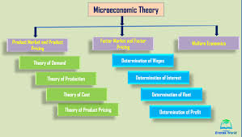
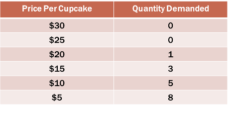
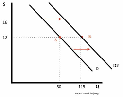

Microeconomics
- Nakatuon sa pagsusuri ng maliliit na bahagi ng ekonomiya.
- Sinusuri ang kilos, gawi, at ugali ng bawat mamimili at produsyer gayundin ang galaw ng pamilihan.

Demand
- Tumutukoy sa dami ng produkto at serbisyo na kaya at handang bilhin ng mga mamimili sa alternatibong presyo sa isang takdang panahon.
- Maitatakda kung ang mamimili ay may kakayahan o kagustuhan na bilhin ang isang produkto at serbisyo.
- Kagustuhan + Kakayahan = Demand
Reason for law of demand
- Substitution Effect
- Kung ang presyo ay tataas, ang mamimili ay hahanap ng mas mura.
- Income Effect
- Kung ang income ay tumaas, bababa ang presyo.
Presyo
- Pangunahing salik na nakapagpapabago ng demand ng mga mamimili.
- May malaking impluwensya sa pagtatakda ng demand ng mga mamimili.
Market Demand
Kapag ang indibidwal na demand ng mga mamimili ay pinagsama-sama.
Batas ng Demand
- Habang ang presyo ng produkto o serbisyo ay tumataas, kumokonti ang bibilhing produkto ng mamimili.
- Kapag ang presyo ay bumababa, dumarami ang produktong bibilhin ng mamimili habang ang ibang salik ay hindi nagbabago.
- Presyo lamang ang nakaaapekto sa demand.
Ceteris Paribus
- Ito ay nangangahulugang "All other things being equal" o "lahat ng iba pang bagay ay pantay".
- Isang hinuha na ang lahat ng iba pang mga salik o variable ay pinanatiling pare-pareho habang sinusuri ang isang partikular na ugnayan sa ekonomiya.
Mga Salik na Nakaaapekto sa Demand
- Panlasa/Kagustuhan
- Kita
- Populasyon
- Presyo ng magkaugnay na produkto
- Okasyon
- Ekspektasyon
Demand Schedule
Isang talahanayan na nagpapakita ng demand ng mamimili sa bawat lebel ng presyo.

Demand Function
- Sa pamamagitan ng mathematical equation ay maipapahayag ang ugnayan ng presyo at demand.
- Formula: Qd=a-Bp
- Qd (Quantity Demanded) - Dependent variable
- P (Presyo) - Independent variable
Demand Curve
Grapikong paglalarawan ng di-tuwirang relasyon ng presyo at dami ng demand.

← Back to Lessons